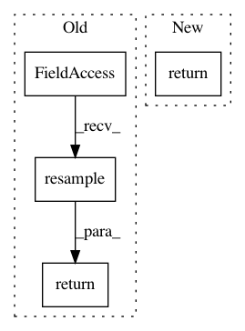

fefc1fc7fefd84f31018a4b02e08df6e4ae5fa71,QUANTAXIS/QAData/data_resample.py,,QA_data_day_resample,#Any#Any#,105
Before Change
day_data=day_data.set_index("date",drop=False)
day_data_p = day_data.resample(type_).last()
return day_data_p.assign(open=day_data.open.resample(type_).first()).assign(high=day_data.high.resample(type_).max()).assign(low=day_data.low.resample(type_).min())\
.assign(vol=day_data.vol.resample(type_).sum() if "vol" in day_data.columns else day_data.volume.resample(type_).sum())\
.assign(amount=day_data.amount.resample(type_).sum()).dropna().set_index("date")
After Change
CONVERSION = {"open": "first", "high": "max", "low": "min", "close": "last", "vol": "sum"} if "vol" in day_data.columns else {
"open": "first", "high": "max", "low": "min", "close": "last", "volume": "sum"}
return day_data.resample(type_, closed="right").apply(CONVERSION)
if __name__=="__main__":
import QUANTAXIS as QA
In pattern: SUPERPATTERN
Frequency: 3
Non-data size: 4
Instances
Project Name: QUANTAXIS/QUANTAXIS
Commit Name: fefc1fc7fefd84f31018a4b02e08df6e4ae5fa71
Time: 2018-08-02
Author: yutiansut@qq.com
File Name: QUANTAXIS/QAData/data_resample.py
Class Name:
Method Name: QA_data_day_resample
Project Name: librosa/librosa
Commit Name: c7f74b5f1a258a0881612dd55446b6d5fce10590
Time: 2012-11-07
Author: brm2132@columbia.edu
File Name: librosa/beat.py
Class Name:
Method Name: _beat_strength
Project Name: pyannote/pyannote-audio
Commit Name: b6cab97a8b9134bdf45becbf2c5c3e57d51e663c
Time: 2020-01-20
Author: hbredin@users.noreply.github.com
File Name: pyannote/audio/features/utils.py
Class Name: RawAudio
Method Name: crop